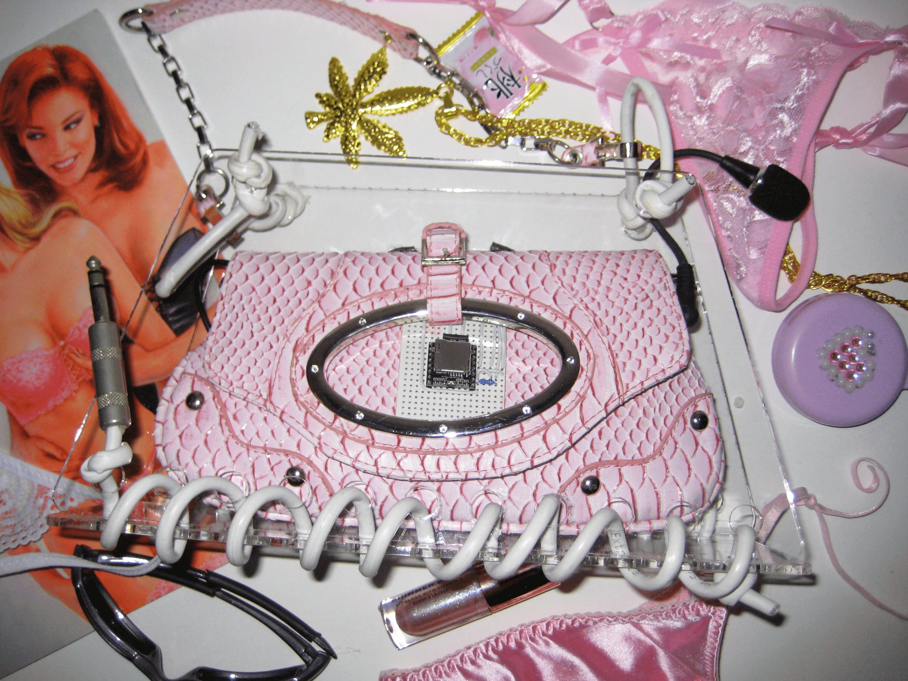
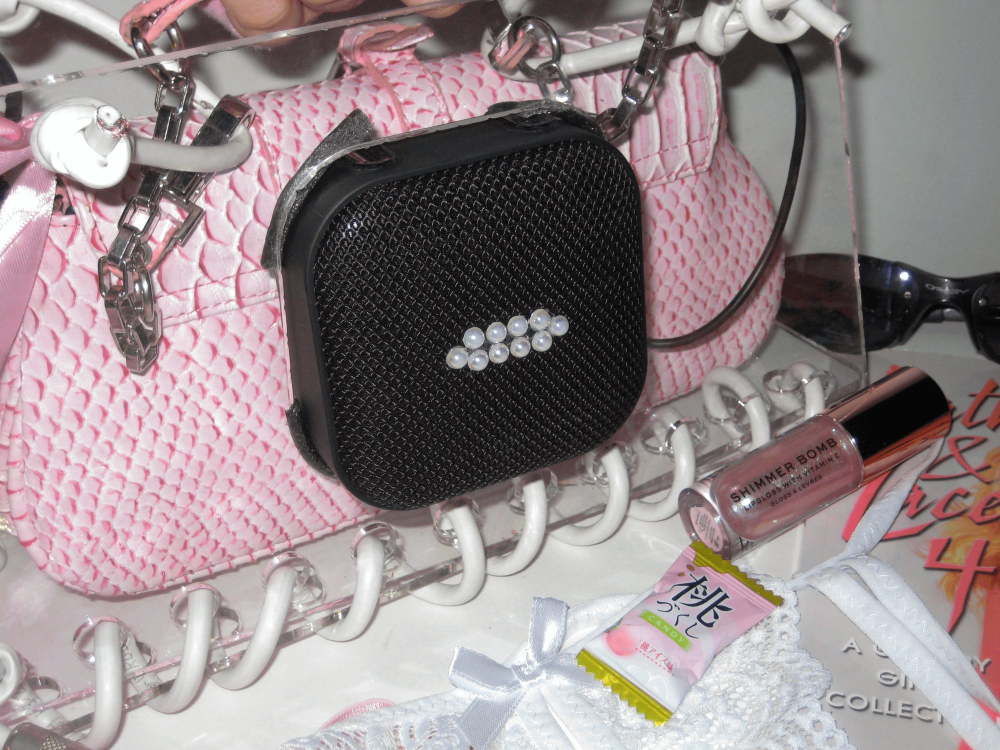
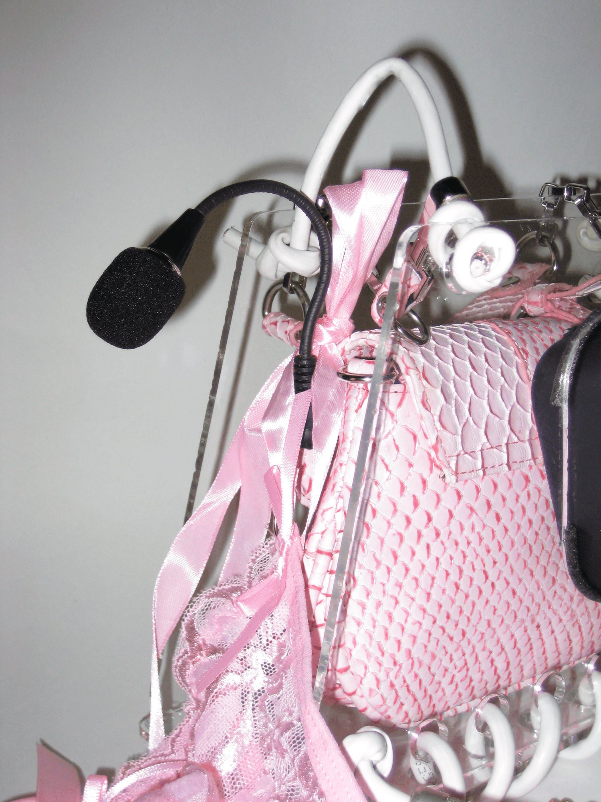
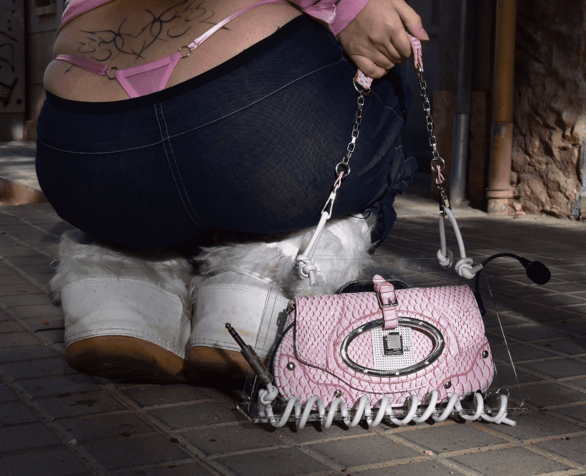
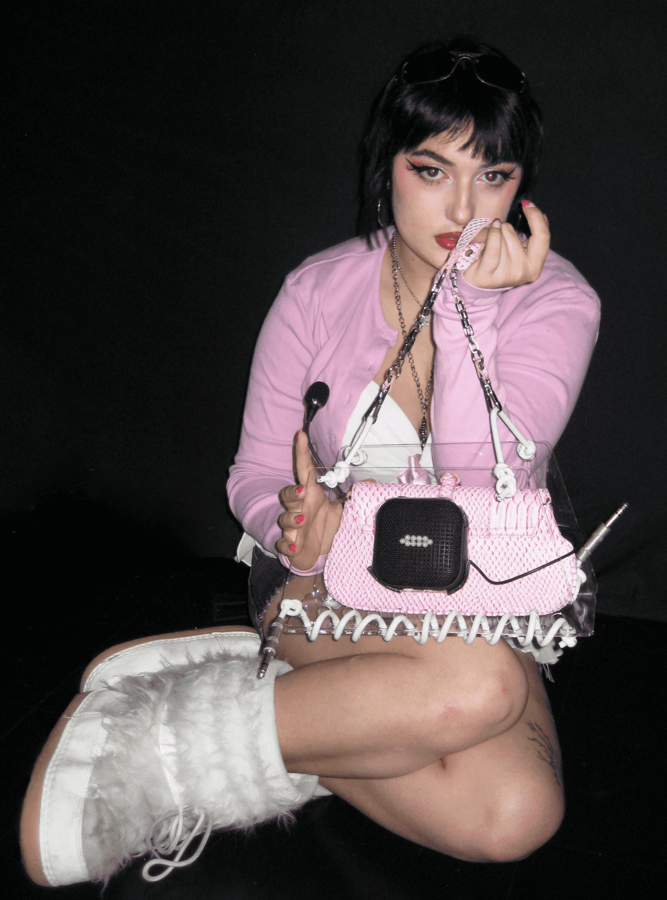

6. PUT*
Bag that censors misogynistic terms with songs that reappropriate them.


If we take a look at Spotify's top 50, we can observe how normalized misogynistic discourses are, with a majority of cisgender men singing about asses, whores, breasts, and bitches.
Both this music and its use of language are everywhere, spreading a harmful message. In the face of this problem, I present a critical artifact in the form of a bag capable of identifying certain terms used in song lyrics and even street harassment, and censoring them. Through a microphone, it detects derogatory terms and then loudly plays a song where a female singer uses the same term but recontextualizes it in a positive way.
The main objective of this proposal is to censor misogynistic discourses and raise awareness about their existence. The element of surprise and humor are strategically employed to grab attention and blatantly interrupt harmful speech.



From mid-May to mid-June 2023, this project was exhibited in the collective art exhibition called “307 persones en 558 m3”, which I participated in organizing.


If you are interested in learning more about this project, you can click here to access additional information, including references, inspiring texts, research findings, as well as the code, tutorials, and schematics for creating a similar system yourself.
You can also have a look at the fanzine I did of the project by clicking the image. (Spanish only)
Project for my “Internet Mining” subject
3rd year of ELISAVA’s Interaction Design degree, 2022
3rd year of ELISAVA’s Interaction Design degree, 2022